Arrival at Airbnb
Part of being Filipino means experiencing life's significant moments with family. I had celebrated my bridal
shower in April with my friends, at the Vault in downtown Cleveland. With a majority of my family residing
in other cities in other states, they were not able to attend. Hence, my family and I planned for a second bridal
shower in Las Vegas.
When it came down to finding the right Airbnb, the first thing we had to consider was space; space for gathering,
eating, and dancing. The second thing to take into account was theme - what kind of theme would be fitting? I
suggested Hawaiian theme, since Vegas was a warm, sunny place. Coming to a consensus, we found an Airbnb that fit
the criteria. The backyard was already decorated with beach vibes and had a pool, and the living room and kitchen
were spacious. There was also a master bedroom with a private bathroom. Of course, the idea of having everyone stay
in one place for a couple of days was appealing, but we decided the event was going to be a one day thing, so having
multiple bedrooms wasn't a consideration.
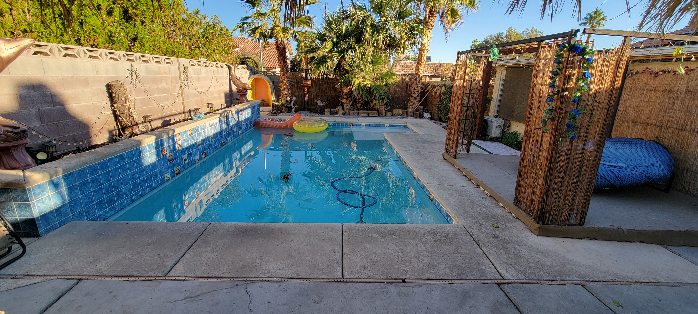
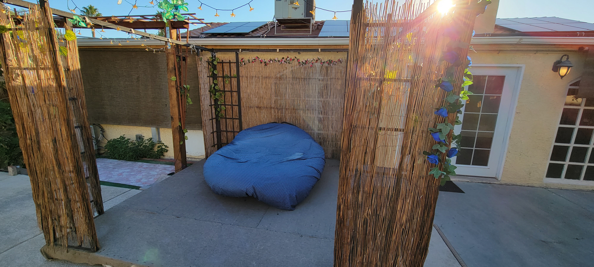
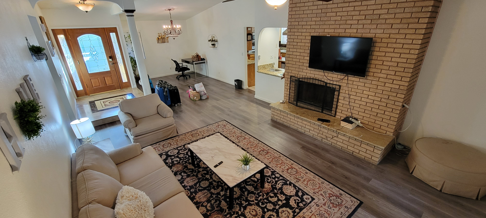
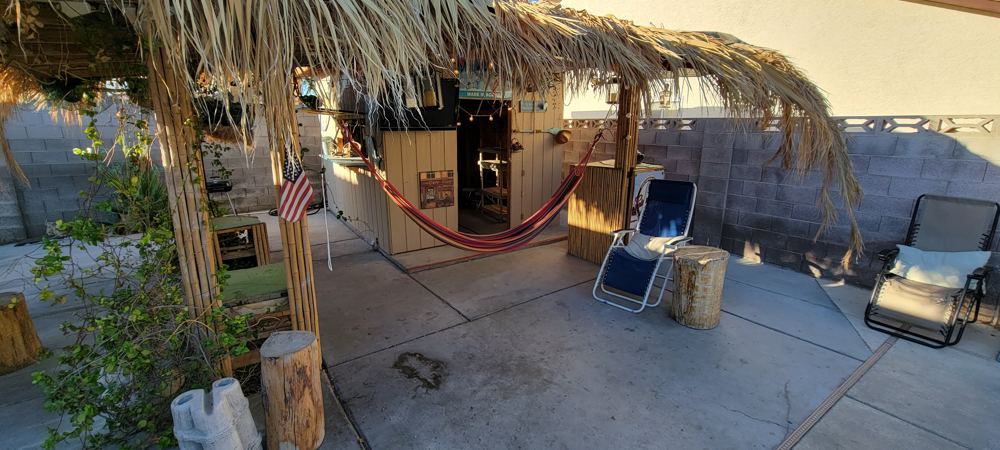
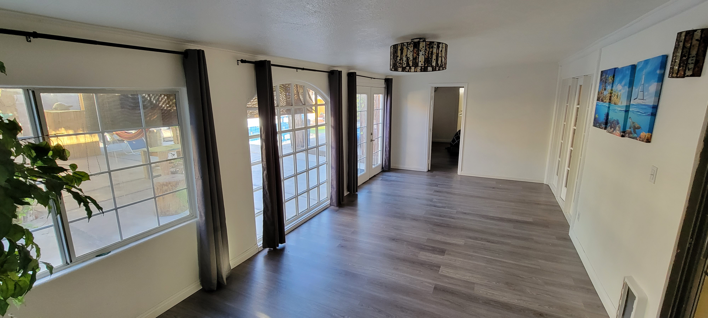
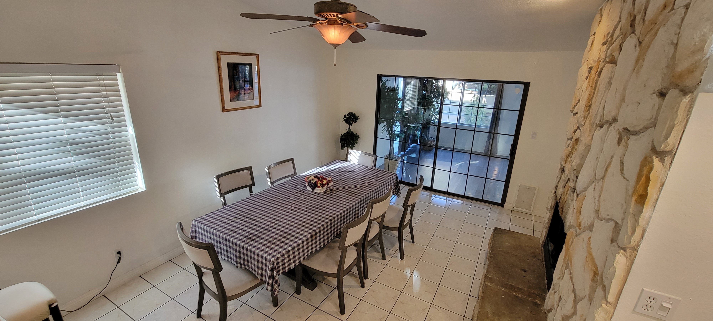
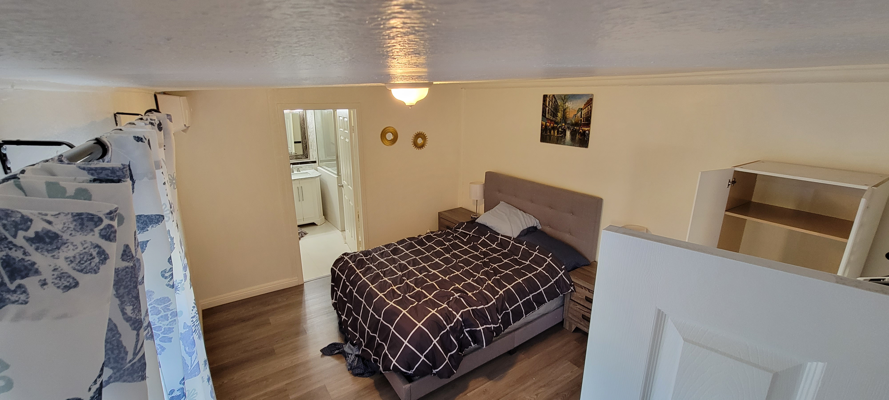
Welcome to Fabulous Las Vegas Sign, Bellagio Hotel & Casino, and Caesars Palace
On the same day as the party at the Airbnb, we toured the touristy areas in Las Vegas. After some
food, dancing, and swimming, we all drove to visit the Welcome to Fabulous Las Vegas sign. Family members
that were from California suggested that this was a must-see as a tourist. I guess with all must-see
famous sites are endless lines of tourists all awaiting their turn at Instagram-worthy pictures.
We must have waited about forty to forty-five minutes to stand next to the sign. The family of five
that were before us took their sweet ol' time taking probably a hundred pictures with the sign. Naturally,
other people started calling them out and shamed them into leaving the area. They did this reluctantly
and found themselves to be at no fault. I digress, the sign was beautiful. The five to six pictures were
lovely, and I'm happy to say I have had the chance to stand next to an iconic sign.
The main attraction, in my opinion, was the Bellagio. We went back to our Airbnb and hotels and changed
into our night party attires. My dad had rented a limousine and so that was our ride for the night. After
picking up everyone, our limo stopped at the Bellagio Hotel & Casino. When we walked into the hotel lobby, I saw
the Fiori di Como glass ceiling sculpture. The art was very familiar, as I had been to the Chihuly Garden and Glass
exhibit in Seattle, Washington. We passed by the slot machines and pocker tables and headed to the Conservatory
& Botanical Gardens. The art here was amazing - very much like a garden in Alice in Wonderland.
After the Bellagio, we drove to Caesars Palace. At the main entrance we were greeted by a statue of August Caesar
(of course). The paintings and statues were very Romanesque. Everywhere you looked, up and down the place was plastered
with Roman art. I thoroughly enjoyed taking many pictures at Caesars Palace, with the beautiful paintings and fabulous
lighting. We ptook a stroll around the Forum Shops, ordered some food and drinks, and took many more pictures.
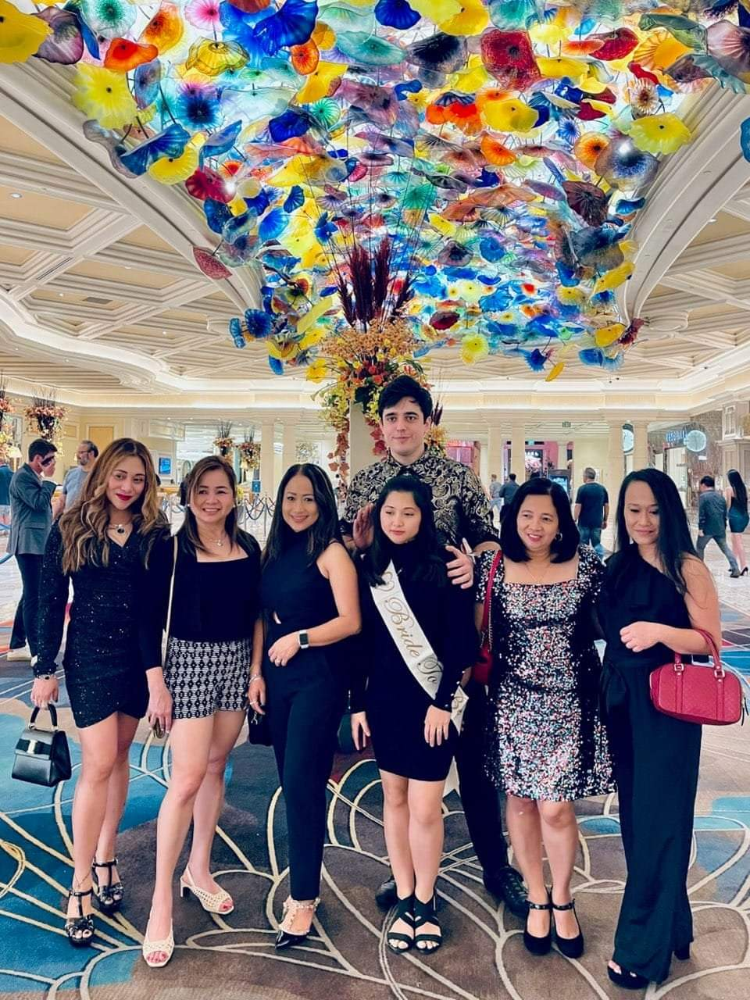
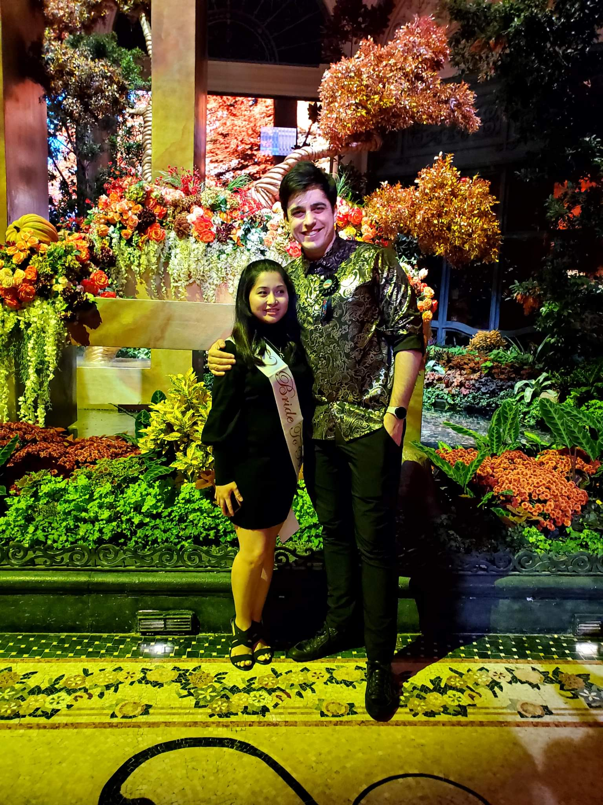
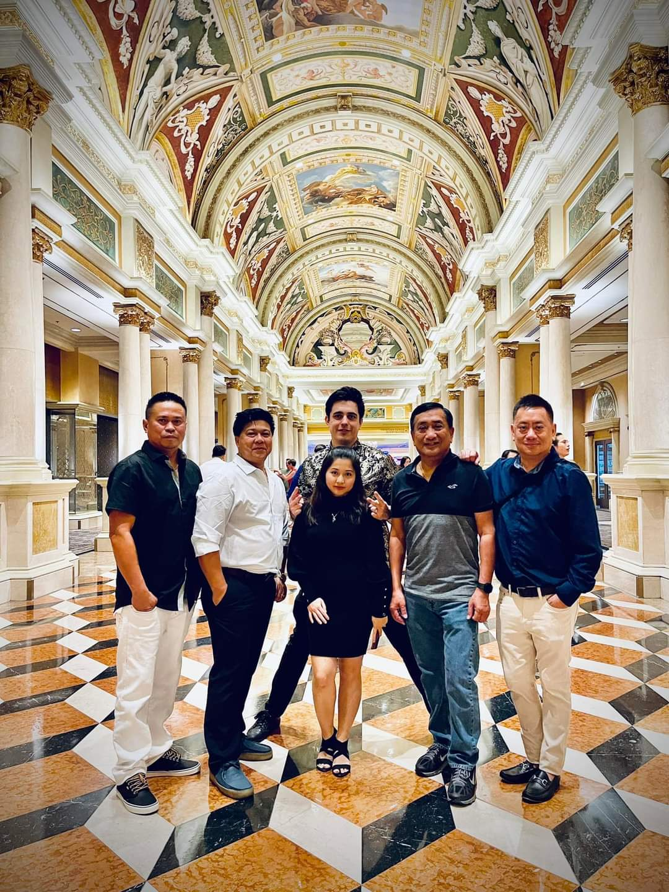
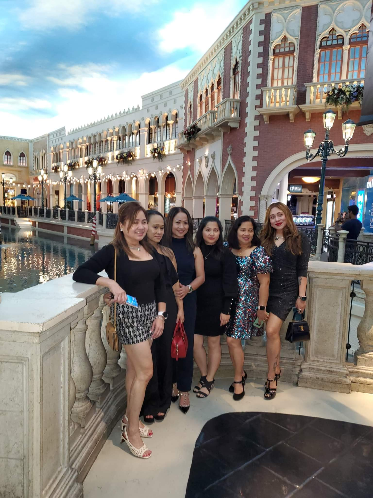
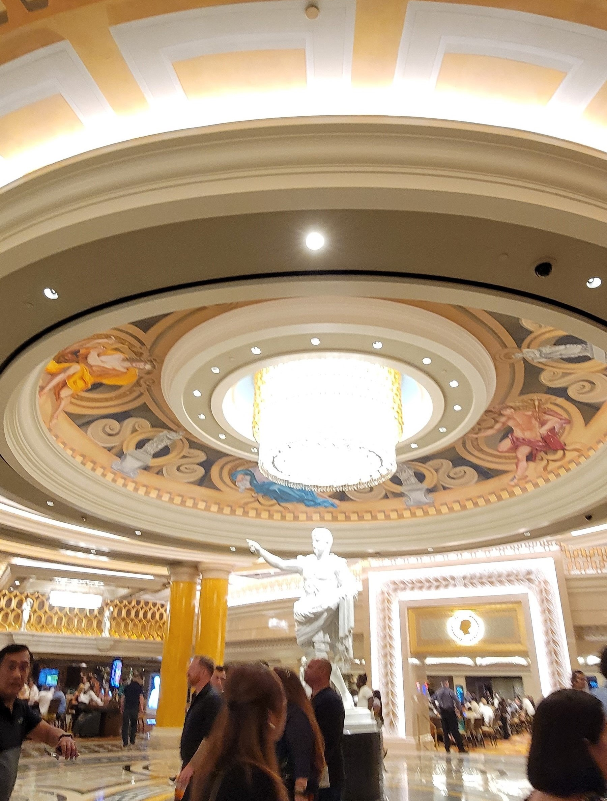
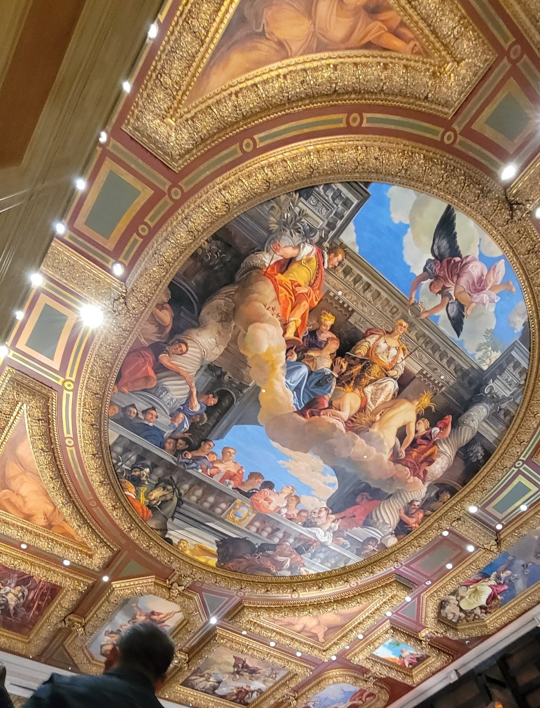